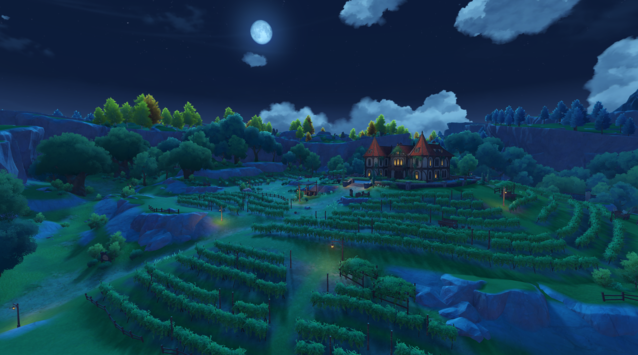

SOBRE O JOGO
Teyvat
Este é o mundo de fantasia de Teyvat, onde dominam os Sete Elementos. Há muito tempo, as pessoas, através de suas crenças nos Deuses, aprenderam a controlar o poder desses elementos, e transformaram este lugar inóspito em suas moradias.
O colapso desse império, há 500 anos, abalou os céus e a terra.
Contudo, apesar da devastação ter acabado, a paz ainda não estava à vista.
Mondstadt
Lago de Cidra
Um lago de água doce natural que cerca Mondstadt. Sua ampla superfície e suas ondas cristalinas nunca mudaram durante milênios. A água é tão clara que você consegue ver o fundo e seu sabor é agradável ao paladar. A reputação do vinho de Mondstadt vem dessa fonte e fez do lago um símbolo da cidade.

Costa do Falcão
Estendendo-se ao leste do Quebrador de Ventos, a Costa do Falcão e o Promontório do Juramento formam os três lados da terra na baía ao leste de Mondstadt. Como a costa é larga e rasa, é um local popular para se visitar entre o povo de Mondstadt.
Frequentemente você pode ver os falcões sulcando o horizonte que divide o mar verde e a areia branca.

Promontório do Julgamento
Um promontório localizado no canto sudeste de Mondstadt, nas margens do Bosque Sussurrante. Dizem que um casal apaixonado uma vez fez um juramento aqui, o que deu origem a uma lenda comovente. É um lugar muito popular entre casais.
Além de poder ver o nascer e o pôr do sol, devido à sua elevação, você pode ver o lado oposto do promontório.

Vinhedo do Alvorecer
O Vinhedo do Alvorecer está localizado no sudoeste de Mondstadt, que continua há gerações a tradição da vinificação. Os campos de uvas que se espalham por todo o lugar são utilizados para a produção de todos os tipos de vinhos que têm grande popularidade em Teyvat. Ano após ano, parte da produção dp vinho é destinada à venda em Mondstadt, e outra parte é distribuída a todos os cantos pela rota comercial ao sul da cidade.
Vale Termal
Uma pequena vila calma ao sul de Mondstadt, em frente ao lago que circunda a cidade. A maioria dos moradores da vila são caçadores que fornecem carne fresca para todos os grandes restaurantes de Mondstadt. O Vale Termal atrai muitos viajantes graças ao seu ao seu charme rústico. Se você tiver a oportunidade de provar carne cozida por um chef experiente, poderá experimentar sensações diferentes.

Templo do Vento Milenar
Um conjunto de ruínas ao nordeste de Mondstadt. Dizem que antigamente era o lugar de adoração ao Deus do Vento, mas ao longo dos anos foi se corroendo, até hoje só restar ruínas. Em alguns pilares de pedra, ainda é possível ver gravuras requintadas de uma glória passada.
Esquecido há muito tempo, há uma frase gravada na pedra:
"As sementes levadas pelo vento crescem ao longo do tempo."